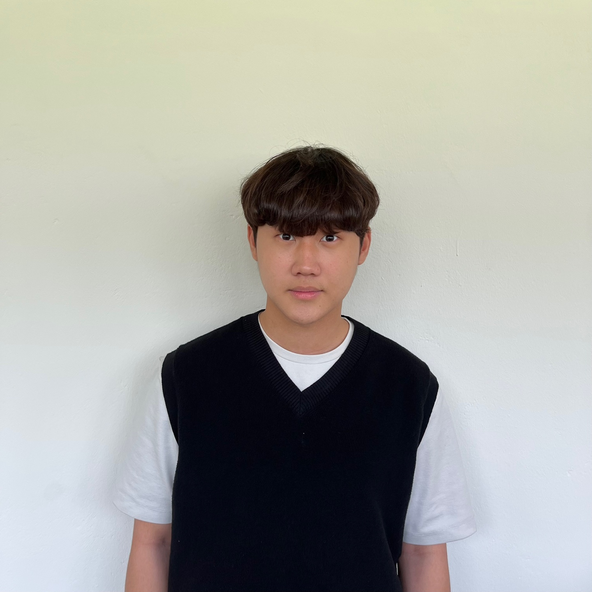
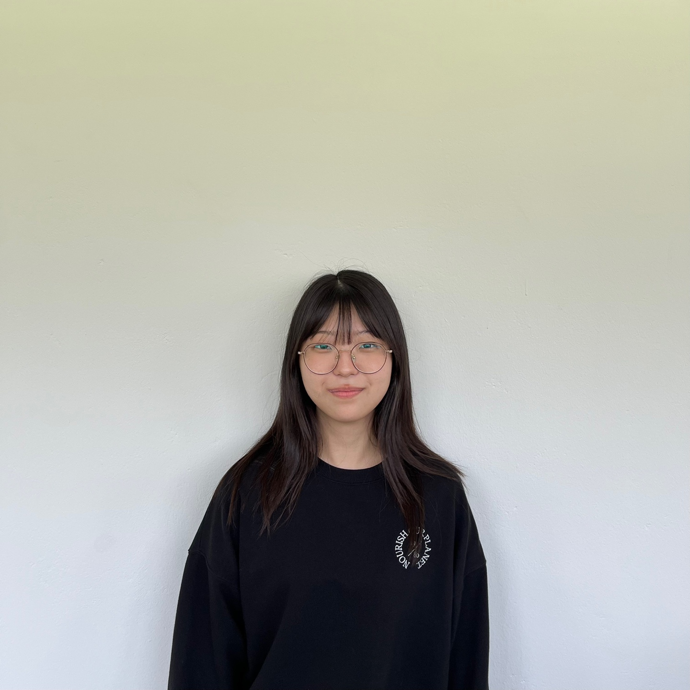
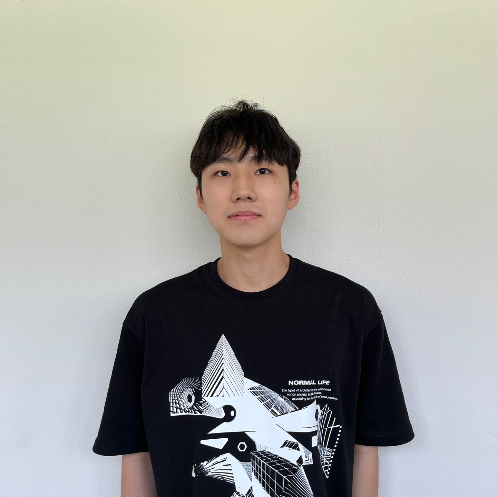
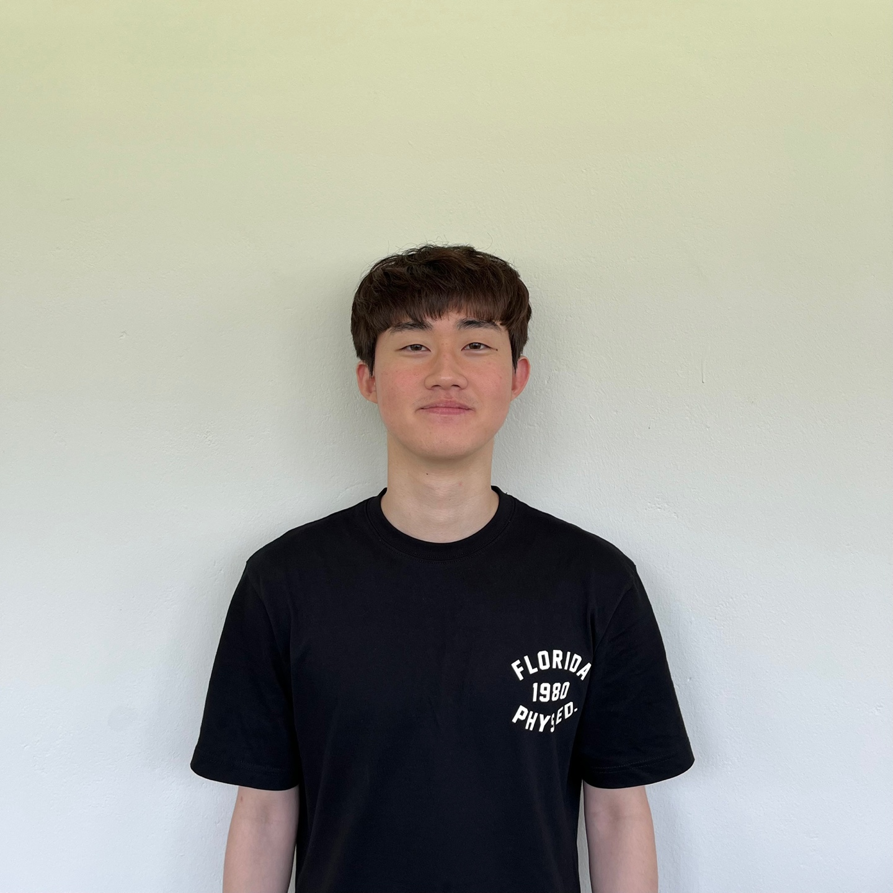

시작의 시작
동의과학대학교 인공지능컴퓨터정보과 청춘개발자-

공민승
gwi5610@naver.com아두이노 제작 및 구성, 회로도 제작 -

김수린
v11673@naver.comPPT 제작, 회로도 제작
-

임승진
seungjin051@gmail.com웹페이지 구성 및 디자인 -

조상원
sangwon8895@naver.com아두이노 제작 및 구성, 아두이노 코드 작성